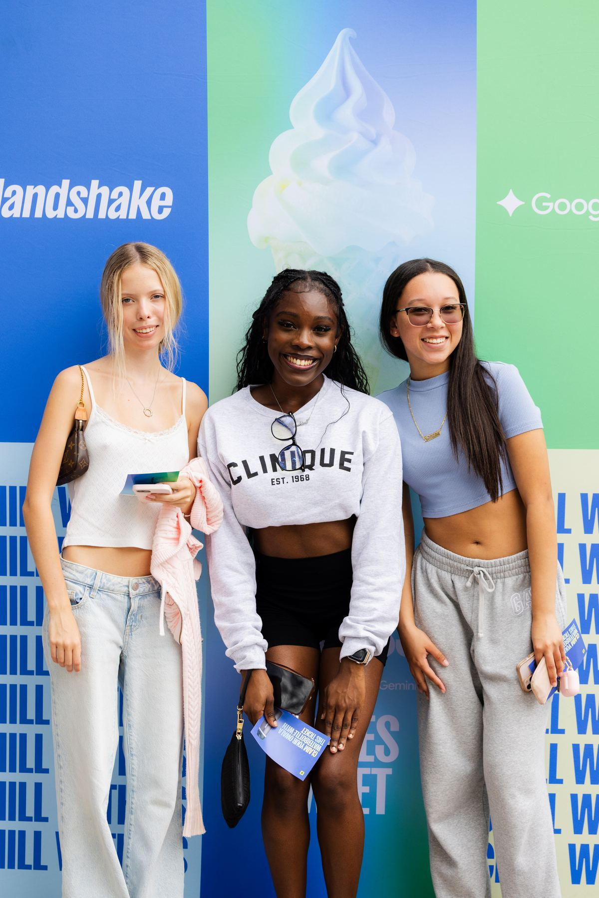
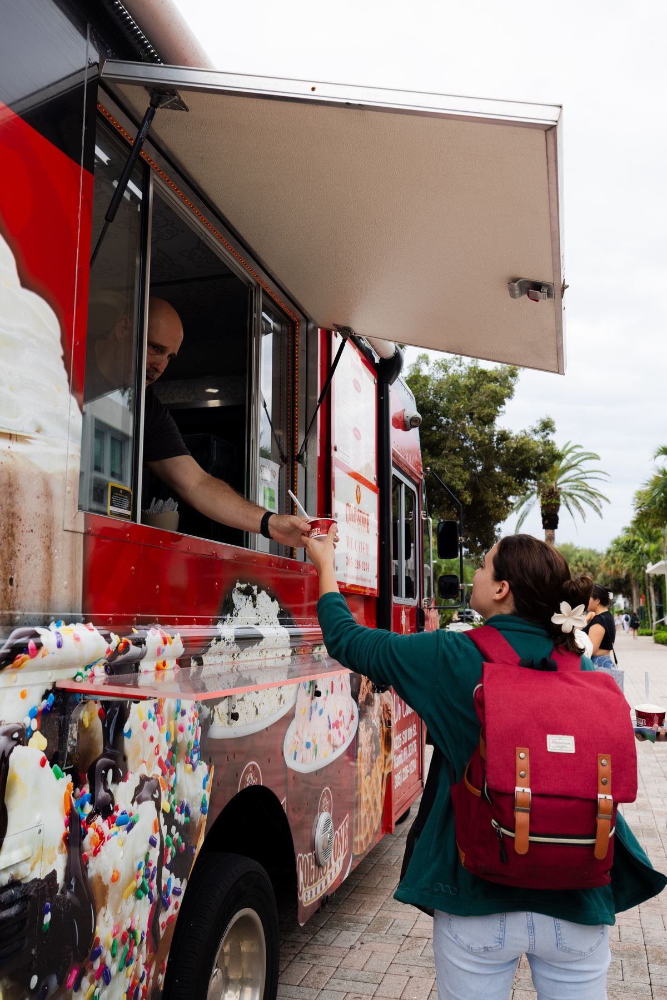
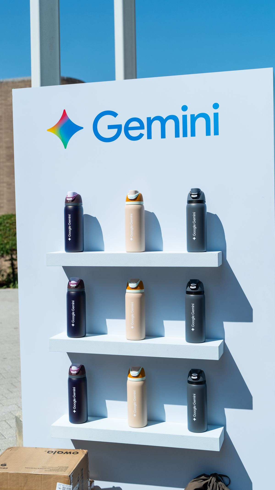

Make the activation bigger than the campus.
You put the time, people, and creativity into creating something students want to experience.
Don't let the story end when the event does.
We build the content strategy, creative, and production that turns campus activations into content students can experience long after they leave campus.
Three things. In this order.
Content Strategy & Ideation
Build the moments people will want to see.
We start before the cameras come out. What happens on campus is only half the opportunity. We develop content strategy, creative concepts, hooks, formats, storylines, and social-first ideas designed to make the activation work beyond the people physically there.
If it isn't worth watching later, it isn't worth capturing.
Production
Turn the activation into something that travels.
The goal isn't to create an event recap. It's to create media from the event. Video. Mixed media. Motion graphics. Interviews. Social-first creative. Recaps. We find the moments that make someone watching from their phone think:
"Wait. What did I miss?"
On-Site Activation Support
Capture the moments you can't recreate.
The best moments don't always happen on the schedule.
A great reaction.
An unexpected interaction.
A student saying exactly what everyone else is thinking.
We're there to recognize those moments, capture them, and turn them into content while they're happening.
The activation happens once. The content can happen again and again.
Handshake × Google Gemini Campus Tour
We led content strategy and production for Handshake and Google Gemini's fall campus activation. The work didn't stop at capturing what happened on campus. We built content designed to take the experience beyond the students who were there, giving the activation another life on social.



What we bring to the activation.
Content Strategy & Ideation
Production
On-Site Activation Support
Riyo Productions built and led the content strategy and production behind the case study above, and works with brands, startups, and creators who need content people actually stop for.
You only get one chance to create the moment.
We make sure more than the people in the room get to experience it.
From campus tours to product launches to student activations, we help labs turn physical experiences into content that travels.
The campus is where it starts. It doesn't have to be where it ends.